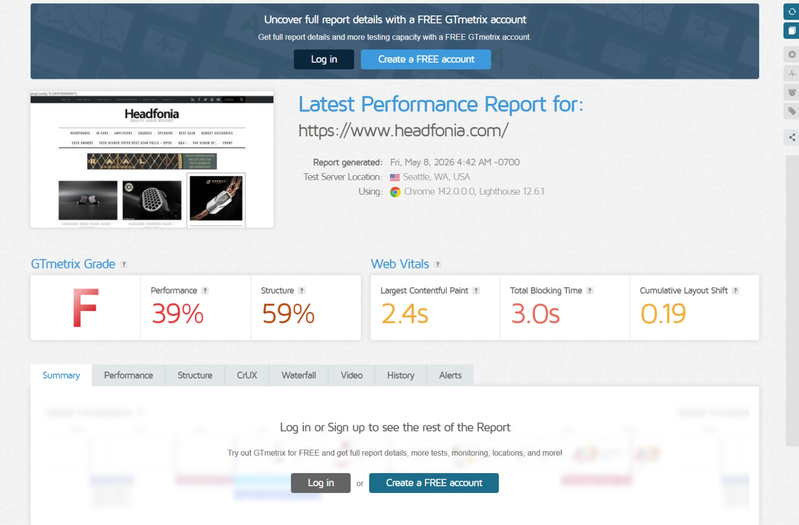
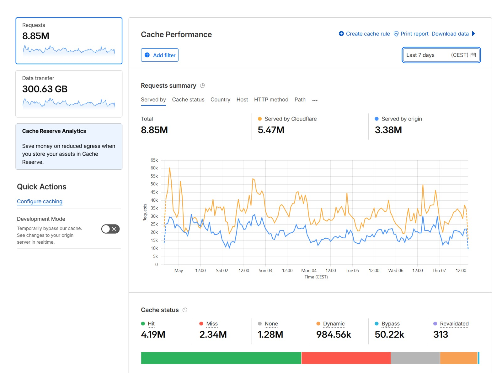
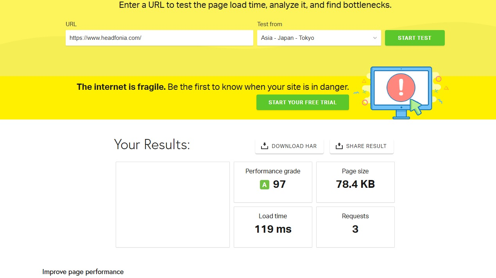
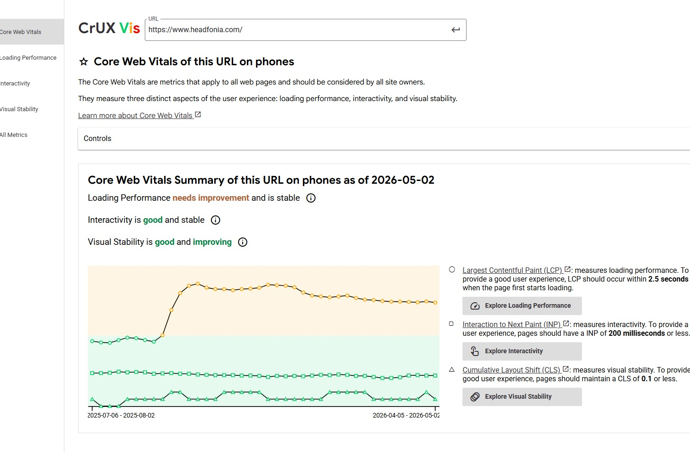

// Performance · Case study
Case: Headfonia.comVan GTmetrix F naar
82% sneller
Een eerlijk verslag van een dag speed-optimalisatie. Wat we vonden, wat we fixten, wat de site even kapotmaakte — en de concrete resultaten met echte screenshots.
Door Kristof Loyens — 13 mei 2026 · 8 min leestijd
Headfonia.com is een van de grotere audiofiele reviewsites wereldwijd — duizenden artikelen, veel afbeeldingen, display-advertenties, en miljoenen bezoekers per maand. De eigenaar had al gemerkt dat de site traag aanvoelde. Toen ik GTmetrix opende, crashte het testplatform letterlijk. Tijd om in te grijpen.
De diagnose
De eerste GTmetrix-test was onthutsend:

GTmetrix Grade F. Performance 39%. En op mobiel zelfs maar 25%. De site was functioneel, maar onder de motorkap was het een puinhoop. Hier zijn de concrete problemen die we vonden:
8.370 milliseconden render-blocking resources
Alleen al de first-party bestanden van headfonia.com blokkeerden het renderen voor meer dan 8 seconden. Dat betekent: de bezoeker staart naar een wit scherm terwijl de browser CSS- en JS-bestanden aan het downloaden is die niet eens nodig zijn voor de eerste weergave.
Meer dan 15 afzonderlijke CSS- en JS-bestanden werden render-blocking geladen — theme-stylesheets, plugin-scripts, een verouderde jQuery-versie met jQuery Migrate, en extern gehoste Google Fonts. Geen van deze bestanden was nodig voor de initiële weergave van de pagina.
Dubbele Google Tag Manager containers
Er draaiden twee GTM-containers op dezelfde site — twee verschillende container-ID's die elk hun eigen set tracking-scripts laadden. Samen goed voor 617.9 KiB aan scripts — waarvan 301.9 KiB pure overhead. Eén container was voldoende.
Google Tag Manager + advertenties = zware JS-payload
De GTM-scripts (617.9 KiB) plus het advertentienetwerk (233.7 KiB) domineerden de JavaScript-payload. Scripts waren goed voor meer dan 20% van de totale paginagrootte — 651 KB aan JavaScript.
Object Cache uitgeschakeld
De server had Object Cache Pro geïnstalleerd, maar Redis stond uitgeschakeld. Dat betekent dat elke pageload de database opnieuw bevraagt in plaats van uit cache te serveren — gratis performance die op tafel lag.
jQuery Migrate waarschuwingen
De browser console toonde tientallen jQuery Migrate-waarschuwingen. Dat wijst op verouderde plugin-code die nog afhankelijk is van een oudere jQuery-versie — extra JavaScript dat meegeladen wordt zonder dat het nodig is.
Publiek toegankelijke database-back-ups — beveiligingslek
Bij het doorlopen van de server vonden we iets dat niets met snelheid te maken heeft maar minstens zo belangrijk is: oude database-back-ups die publiek toegankelijk waren. Dit soort bestanden horen nooit in een publieke map te staan. Direct verwijderd en de eigenaar geïnformeerd.
Wat we gedaan hebben
Stap 1: Cloudflare + Cloudways caching hersteld
De Cloudways-server stond achter Cloudflare, maar de caching-configuratie was niet optimaal. Van de 8.85 miljoen requests in de afgelopen week werd 38% door de origin server bediend in plaats van uit Cloudflare cache.

We hebben de cache rules bijgesteld zodat statische content consistent uit Cloudflare wordt geserveerd.
Stap 2: Render-blocking resources aanpakken
- Niet-essentiële CSS/JS gedeferred — poll-plugins, rating-widgets en advertising scripts hoeven niet render-blocking te laden
- Google Fonts lokaal gehost — 750ms render-blocking time geëlimineerd
- Dubbele GTM-container verwijderd — één container behouden, de andere uitgeschakeld
Stap 3: Afbeeldingen en content
- Afbeeldingen verkleind en gecomprimeerd — de totale image-payload ging van 80%+ van de pagina naar beheersbaar niveau
- Artikelen op de homepage verminderd — minder posts = minder afbeeldingen en scripts per pageload
- Lazy loading gecontroleerd — below-the-fold content laadt pas wanneer nodig
Stap 4: Server-side
- Redis Object Cache geactiveerd — database queries uit cache in plaats van live
- PHP-versie gecontroleerd
- Database opgeschoond — overbodige revisies, transients en spam verwijderd
- Beveiligingslekken gedicht — publiek toegankelijke back-upbestanden verwijderd
Wat de site even kapotmaakte
Na de grote verbeteringen probeerde ik ook JavaScript minificatie aan te zetten. Had al een aantal bestanden ge-excluded waarvan ik wist dat ze problemen zouden geven. Maar de site ging direct kapot. Binnen seconden meldde de eigenaar: "Oei de site is heel stuk ineens." Direct uitgezet — de site was binnen een minuut terug. Les geleerd: JS minificatie op een bestaande WordPress-site met veel plugins is een mijnenveld. Bestand per bestand testen, niet in bulk.
Het resultaat
Dat is een reductie van 82% in laadtijd. In één dag werk.
Pingdom wereldwijd — de echte test
Headfonia.com heeft lezers over de hele wereld. Dus testten we vanuit vier Pingdom-locaties om te zien hoe Cloudflare's edge caching presteert:
FRANKFURT 🇩🇪
564ms
C 71 · 2.0 MB
WASHINGTON D.C. 🇺🇸
771ms
C 71 · 2.0 MB
SYDNEY 🇦🇺
1.67s
D 70 · 2.0 MB
TOKYO 🇯🇵
119ms
A 97 · 78.4 KB · 3 requests

Die Tokyo-score moest ik twee keer checken. A 97. 119 milliseconden. 78.4 KB. 3 requests. Cloudflare's Tokyo edge node serveerde de volledige pagina uit cache — de origin server in Europa werd niet eens aangesproken. Vanuit Frankfurt en Washington haalde de site ook goede tijden. Sydney is logisch wat trager door de afstand, maar alsnog acceptabel.
Core Web Vitals — de lange termijn

De Chrome User Experience Report (CrUX) toont de echte gebruikersdata over tijd. Per 2 mei 2026:
- Loading Performance — "needs improvement", maar stabiel en dalend. De LCP was eerder diep in het oranje, nu aan het zakken richting de groene zone.
- Interactivity (INP) — "good and stable" ✅
- Visual Stability (CLS) — "good and improving" ✅
Twee van de drie Core Web Vitals scoren nu goed. De LCP-verbetering is zichtbaar in de trend maar heeft nog enkele weken nodig om volledig door te werken in de CrUX-data — het is immers een rolling average van 28 dagen. De verwachting is dat ook Loading Performance naar "good" gaat na de volledige datacyclus.
Wat er nog overblijft
De site is enorm verbeterd, maar er is nog ruimte:
- Pingdom toont nog een F-score op HTTP requests (112) en Expires headers — het aantal requests kan nog verder omlaag door CSS/JS te bundelen
- Gzip-compressie stond op F 12 — dit moet op serverniveau correct geconfigureerd worden
- JS minificatie — moet voorzichtig per bestand getest worden op een staging-omgeving
- PageSpeed Insights Core Web Vitals — de officiële scores verbeteren pas na 28 dagen (rolling average). We evalueren opnieuw na 4-6 weken.
Wat we geleerd hebben
- GTmetrix die crasht is een diagnose op zich — als het testplatform je site niet aankan, kan je bezoeker dat ook niet
- Dubbele GTM-containers zijn een stille killer — ze laden dubbel zoveel tracking-scripts zonder dat iemand het merkt
- Object Cache uitgeschakeld laten is gratis performance weggooien — Redis stond letterlijk klaar maar was niet geactiveerd
- Beveiligingsaudits horen bij performance-audits — publiek toegankelijke back-upbestanden vinden was niet het doel, maar wel het belangrijkste resultaat van de dag
- JS minificatie op een live site = gevaarlijk — altijd op staging testen, nooit in bulk
- Geduld met Google — PageSpeed Insights toont een rolling average van 28 dagen. De echte impact zie je pas weken later in Search Console.
Trage WordPress-site?
Wij analyseren uw site gratis en vertellen u exact waar de bottlenecks zitten — en wat het kost om ze op te lossen. Geen verplichtingen.
Gratis speed-analyse aanvragen →Gerelateerde artikelen

Kristof Loyens
Eigenaar Quantum Leap. 20+ jaar ervaring in webdesign en performance-optimalisatie. Maakt ook een geweldige pompoensoep.